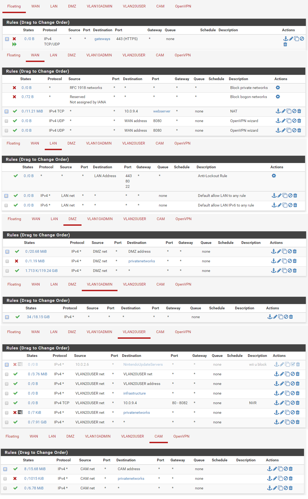
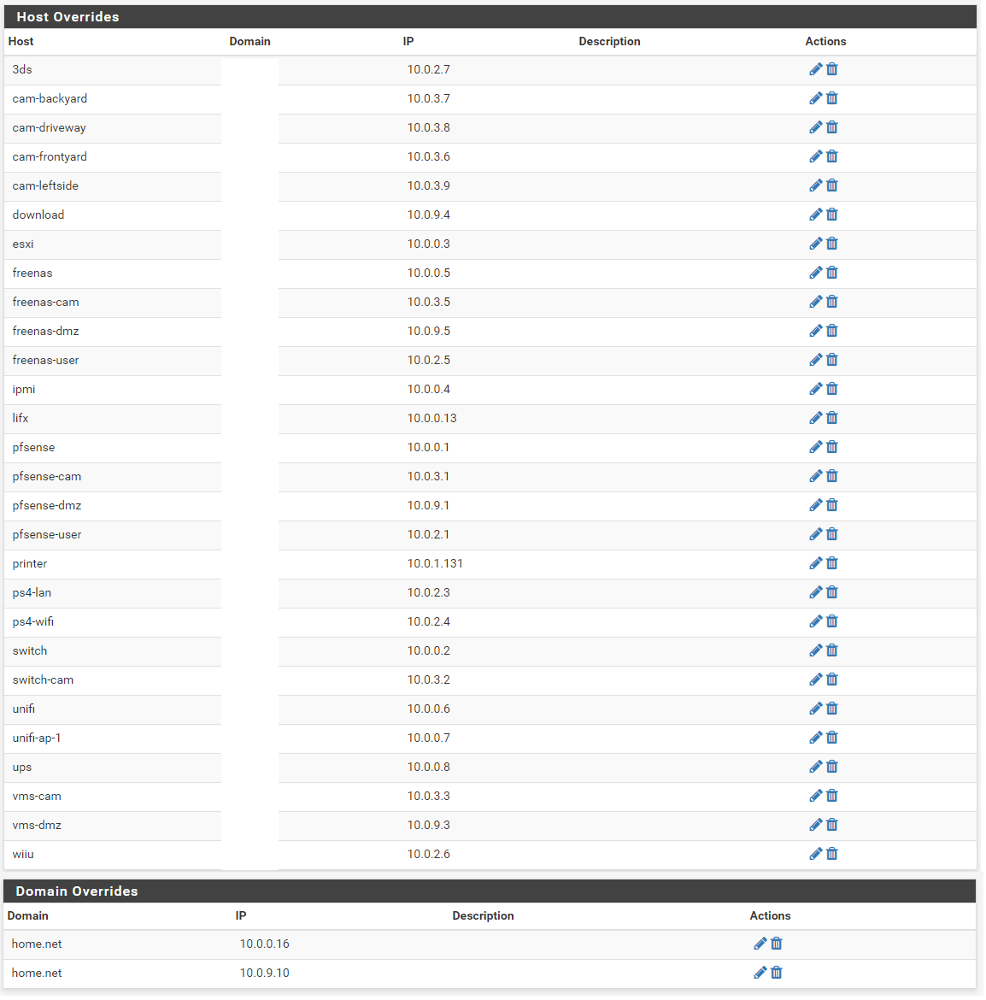
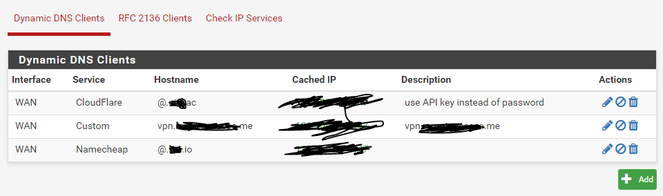

pfSense¶
| Networking | |
| Hostname | pfsense |
| IP | 10.0.100.0 / 10.0.X.1 |
| Virtual Machine | pfsense |
| Website | https://10.0.0.1/ |
| Software | |
| Version | 2.3.3-RELEASE-p1 |
| Last Updated | March 9 2017 |
| Hardware | |
| CPU | 1 |
| Memory | 512MB |
| Network | All |
| Storage | 8GB (mirror ZFS0/1) |
pfSense is an open source firewall/router computer software distribution based on FreeBSD. It is installed on a computer to make a dedicated firewall/router for a network and is noted for its reliability and offering features often only found in expensive commercial firewalls. It can be configured and upgraded through a web-based interface, and requires no knowledge of the underlying FreeBSD system to manage. pfSense is commonly deployed as a perimeter firewall, router, wireless access point, DHCP server, DNS server, and as a VPN endpoint.
Packages¶
- Avahi
- mailreport
- Open-VM-Tools
- openvpn-client-export
- snort
Firewall Rules¶
DNS Entries¶
Dynamic DNS¶
Snort Suppress¶
#(http_inspect) NO CONTENT-LENGTH OR TRANSFER-ENCODING IN HTTP RESPONSE
suppress gen_id 120, sig_id 3
#(http_inspect) BARE BYTE UNICODE ENCODING
suppress gen_id 119, sig_id 4
#(spp_ssl) Invalid Client HELLO after Server HELLO Detected
suppress gen_id 137, sig_id 1
#(http_inspect) INVALID CONTENT-LENGTH OR CHUNK SIZE
suppress gen_id 120, sig_id 8
#(http_inspect) DOUBLE DECODING ATTACK
suppress gen_id 119, sig_id 2
#(http_inspect) UNESCAPED SPACE IN HTTP URI
suppress gen_id 119, sig_id 33
#(ftp_telnet) FTP command parameters were too long
suppress gen_id 125, sig_id 3
#(http_inspect) JAVASCRIPT OBFUSCATION LEVELS EXCEEDS 1
suppress gen_id 120, sig_id 9
#(http_inspect) UNKNOWN METHOD
suppress gen_id 119, sig_id 31
#(http_inspect) IIS UNICODE CODEPOINT ENCODING
suppress gen_id 119, sig_id 7
#(ftp_telnet) Invalid FTP Command
suppress gen_id 125, sig_id 2
#(http_inspect) JAVASCRIPT WHITESPACES EXCEEDS MAX ALLOWED
suppress gen_id 120, sig_id 10
#(spp_sip) URI is too long
suppress gen_id 140, sig_id 3
#(http_inspect) SIMPLE REQUEST
suppress gen_id 119, sig_id 32``